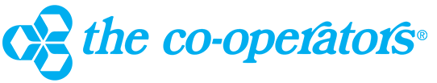

Introduction
I am Brittany Mueller, at the time of writing this, I'm a 3rd year Computer Science Co-op student, minoring in Mathematics, working towards my Bachelor of Computing at the University of Guelph. This report will go over my 8 month co-op term at The Co-operators (May to Dec 2020) and how I was able to succeed in a remote work environment.
I spent the past 8 months working at the Co-operators as a Junior Developer & System Analyst talk about how it was remote, how it was unique experience opportunity of working on two different teams. During the second half of my time with Co-operators, I was given the unique opportunity of working for a different team. My role started with the Sales Performance Management (SPM) Compensation team. Essentially our team was responsible for managing the SPM When I started, the need for regression testing of SPM was apparent. a common goal was developing a regression there was an apparent need for testing
About the Co-operators
The Co-operators is a Canadian insurance cooperative founded in 1945 (list a few types of insurance they offer). Their head office is based here in downtown Guelph, which is where I would have been working if it wasn't remote. The Co-operators consists o I started at Co-operators on the SPM Compensation team, a small team within the Advisor Experience program that consisted of mainly QAs and business analysts. to ensure quality in a website :S SPM is an application for advisors to manage their agency, staff, and sales under cooperators, so the SPM compensation team was primarily responsible for managing the commissions section of the application. As the only developer it was weird
During the second term I was given the unique opportunity to work with another team whose focus was Client Experience
Goals - S20
1. Improve documentation and organization skills 2. Develop skills in robot framework talk about the projects i worked on, talk about success, results of automation 3. gain confidence when speaking to large groups/senior members in a remote environment, it was especially daunting navigating even day to day correspondance, most times having a chat or asking someone for advice felt like it required emails or meetings (this is getting off topic tho, but i thought i could use it as a lead up to stress my lack of confidence) success - were able to successfully present our project work, regression testing project
Goals - F20
1. Develop front-end web dev skills working on an Angular web app 2. Mentor new developer on Robot Framework jenkins 3. Learn to work in Agile environment/the Agile method During my term, I was also given the opportunity to receive my LEAN White Belt Certification. LEAN is a methodology that aims to eliminate waste (poor design, poor communication, etc.) and optimize that the Agile methods development -- optimally the two methods should be used, "LEAN methods help
Acknowledgements
I’m especially grateful that I got this really unique opportunity of being able to work on two different teams, I started on AX for the SPM compensation team for most of my term and then now being over here seeing the CX side of things, it helps complete the picture and is interesting to see both sides of it.